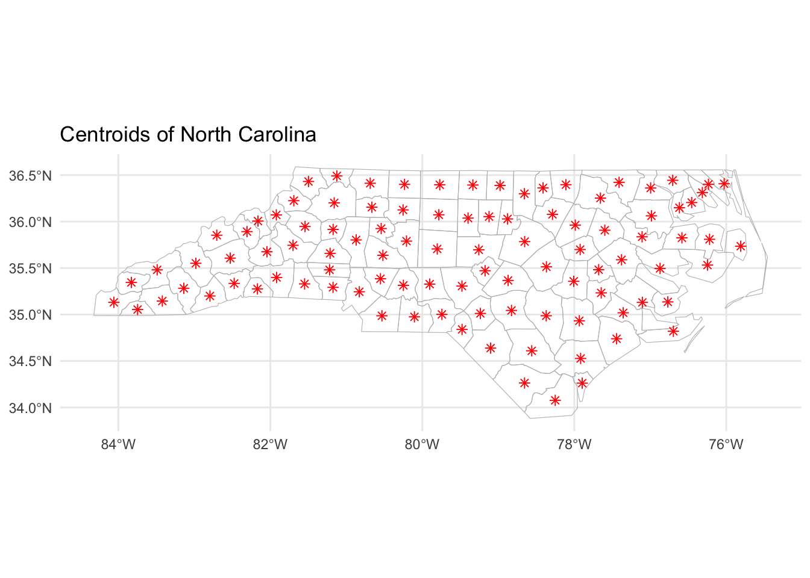

Quick start
In just a few lines of code, you can create stunning visualizations
with the sf package in R. What’s more, sf lets
you create maps from almost any data format, such as shapefiles or geojson.
You can learn more about geographical data in the map section.
This package offers a large variety of functions to manipulate and visualize geographic data. The main steps usually are:
create a geospatial object with
st_read()orread_sf()filter, transform, and manipulate the object for your needs
plot the object with
plot()or with ggplot2
✍️ author → Edzer Pebesma
üìò documentation → github
⭐️ more than 1000 stars on github
Installation
To get started with sf, you can install it directly from
CRAN using the install.packages function:
Basic usage
The sf package is shipped with the nc
dataset, which contains the boundaries of North Carolina.
Here’s a basic example of how to plot the first feature of the
nc dataset:
Key features
→ Choropleth Maps
The sf package allows you to create choropleth maps with ease.
Simply use the geom_sf() function with ggplot2 to create a choropleth map of your geographic
data.
You can customize the map by specifying the
fill aesthetic and the color palette using
the scale_fill_viridis_c() function
Example:
library(sf)
library(ggplot2)
# Read the shapefile
nc = st_read(system.file("shape/nc.shp", package="sf"), quiet = TRUE)
# Create the plot using ggplot2
ggplot() +
geom_sf(data = nc, aes(fill = AREA)) +
scale_fill_viridis_c() +
ggtitle('Choropleth Map of North Carolina') +
theme_minimal()→ Graticules
Graticules are lines of latitude and longitude that help you orient
yourself on a map. You can add graticules to
your map using the plot() function.
Example:
library(maps)
library(sf)
library(ggplot2)
library(patchwork)
# create a map of the USA
usa = st_as_sf(map('usa', plot = FALSE, fill = TRUE))
laea = st_crs("+proj=laea +lat_0=30 +lon_0=-95") # Lambert equal area projection
usa2 <- st_transform(usa, laea)
# create ggplot objects with graticules
p1 = ggplot(data = usa) +
geom_sf() +
theme_minimal()
p2 = ggplot(data = usa2) +
geom_sf() +
theme_minimal()
# combine plots with patchwork
p1 + p2→ Compute and plot centroids
You can compute and plot the centroids of your
geographic features using the st_centroid() function.
Caution: Centroids serve merely as an approximation of a polygon’s “center” and may not always provide meaningful or accurate insights.
Example:
library(sf)
library(ggplot2)
# Read the shapefile
nc = st_read(system.file("shape/nc.shp", package="sf"), quiet = TRUE)
ncg = st_geometry(nc)
cntrd = st_centroid(ncg)
# Create the plot using ggplot2
ggplot() +
geom_sf(data = ncg, fill = NA, color = 'grey') +
geom_sf(data = cntrd, color = 'red', shape = 8, size = 2) +
ggtitle('Centroids of North Carolina') +
theme_minimal()
→ What’s more?
While sf is not a data visualization package per se, it
provides extensive functionalities for handling and visualizing geographic data. This includes:
- Creating a geospatial object using
st_read()orread_sf()from virtually any file format. - Filtering, transforming, and manipulating the geospatial object to suit your specific requirements.
- Enhancing your visualizations by integrating with other packages, such as ggplot2.
Explore the capabilities of sf below!
Gallery of sf examples
The gallery is filled with examples of how to use
the sf package to create stunning visualizations. Dive in
and discover the possibilities!